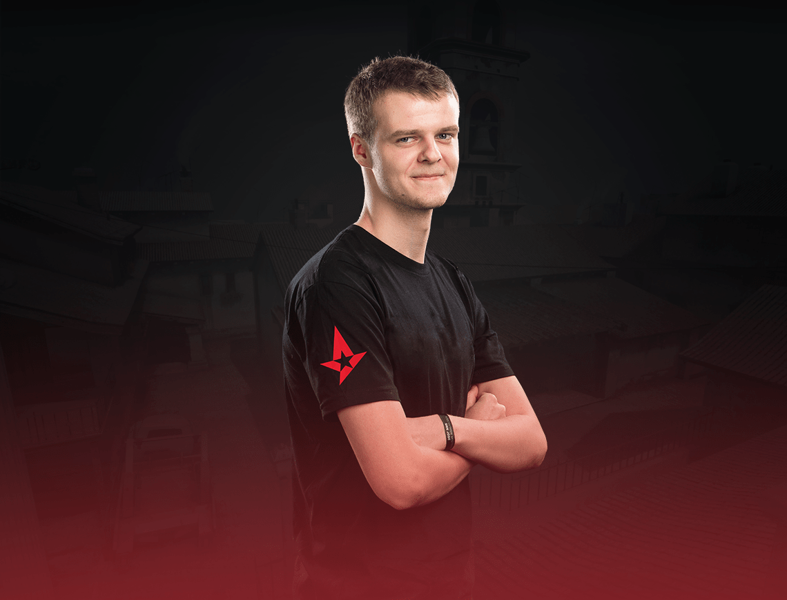

XYP9X


Andreas Højsleth, beter bekend onder zijn online alias Xyp9x, is een Deense professionele esports-speler die meedoet aan de Counter-Strike: Global Offensive-toernooien. Hij is lid van team Astralis. Højsleth is geboren en getogen in Aars in de regio Noord-Denemarken.
Name:Andreas Højsleth
Birth:September 11, 1995
Nationality:Denmark
Team:Astralis
Role:Rifler